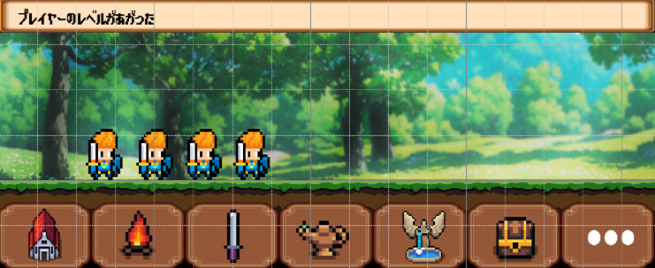
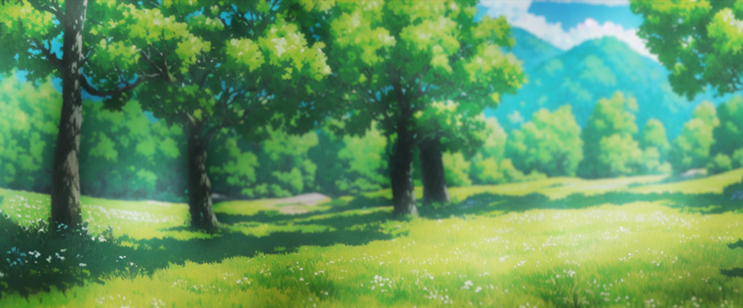
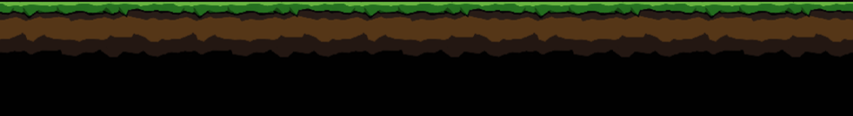
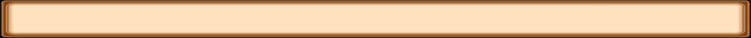
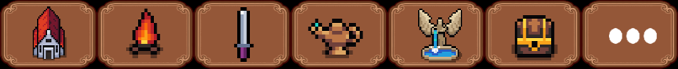

画面下部（1080×384px）のレイヤー構成と各素材の配置。詳細仕様は 機能_05_バトル を参照。

| レイヤー | ファイル | サイズ | 配置 | 内容・挙動 |
|---|---|---|---|---|
| 1（最背面） | battle/background_grass.png | 1080×386 | ー | 自然背景（木・空）。歩くとスクロール（速度0.1倍） |
| 2 | ui/floor.png | 1080×128 | 下詰め | ピクセルアート地面（草＋土）。歩きスピードでスクロール |
| 3 | ui/textbox.png | 1080×48 | 上詰め | テキスト表示用ウィンドウ（ベージュ枠） |
| 4（最前面） | ui/fotter.png | 1080×96 | 下詰め | フッターボタン×7（マップ・キャンプ・武器・魔法・回復・インベントリ・その他）。現状仮 |



